QGIS 2.14の変更履歴¶
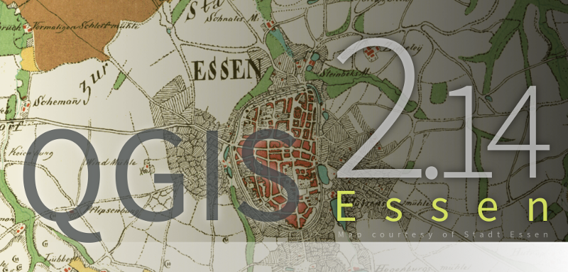
これはQGISバージョン2.14 『Essen’の次回リリースの変更履歴です。エッセンは2012年10月と2014年にデベロッパーミーティングを開催するホスト都市でした。
長期サポート
これは「LTR」（長期リリースLong Term Release）と呼ばれる特別なリリースです。LTRのリリースは、 ** 1年間のバックポートバグ修正** でサポートされ、恒久的な機能のフリーズになります（つまり、新しい機能は追加されません。バグ修正と簡単なアップデートのみ）。LTRリリースの期間を2年間延長することについて議論していますが、技術的な理由から、QGIS 3.2まではこれを行いません。
LTRリリースの目的は、1年に1回以上、ユーザースキルの更新、教材のトレーニングなどに対処したくない企業や組織に対して、安定した頻繁に変化するプラットフォームを提供することです。LTRの成功は、あなたのご愛顧いただいているユーザーにとって非常に重要です。バグ修正に資金を援助し、サポートプロバイダーとのサポート契約であなたのために行われたバグ修正がLTR支店私たちの通常の開発ブランチだけでなく、
LTRが重要な場合は、QGISプロジェクトを直接サポートすることも検討してください。また、LTRをエンタープライズソリューションの基盤として使用することを商用プロバイダに推奨し、安定したプラットフォームを継続的に改善し、洗練されたメリットを享受してください。フロンティアに住むことを希望するユーザーや組織にとって、定期的な4か月ごとのリリースは引き続き控えています。
QGIS 2.14 『Essen』 の新機能
QGIS 2.8（以前のLTRバージョン）からアップグレードする場合、このリリースでは非常に多くの新機能が見つかります。このQGIS 2.14には、これらのリリースで公開されているすべての機能も含まれているため、中間の非LTR 2.10 <../ visualchangelog210 /> __および 2.12 <../ visualchangelog212 /> __リリースの変更履歴を熟読することをお勧めします。2.14は最初に通常のパッケージリポジトリに入り、LTRパッケージリポジトリの2.8をすぐには置き換えないことに注意してください。それは2.16がリリースされたときに起こります。
新しい機能がソフトウェアに追加されるたびに、新しいバグが発生する可能性があります。このリリースで問題が発生した場合は、 `QGISバグトラッカー<http://hub.qgis.org>`__ にチケットを提出してください。
謝辞
We would like to thank the developers, documenters, testers and all the many folks out there who volunteer their time and effort (or fund people to do so). From the QGIS community we hope you enjoy this release! If you wish to donate time, money or otherwise get involved in making QGIS more awesome, please wander along to qgis.org and lend a hand!
QGIS is supported by donors and sponsors. A current list of donors who have made financial contributions large and small to the project can be seen on our donors list. If you would like to become an official project sponsor, please visit our sponsorship page for details. Sponsoring QGIS helps us to fund our six-monthly developer meetings, maintain project infrastructure and fund bug fixing efforts. A complete list of current sponsors is provided below - our very great thank you to all of our sponsors!
QGISはフリーソフトウェアであり、使用するために何かを支払う義務はありません。実際、財務的または社会的地位にかかわらず、遠くから広く人々にそれを使用するよう奨励したいと考えています。すべての人類にとってより良い社会をもたらします。あなたがQGISをサポートできるなら、あなたはここに寄付することができます|
QGISスポンサーのみなさま¶
  Office of Public Works, Ireland, アイルランド (12.2014-12.2016) Office of Public Works, Ireland, アイルランド (12.2014-12.2016) |
 GAIA mbH, ドイツ (11.2015-11.2016) GAIA mbH, ドイツ (11.2015-11.2016) |
 Sourcepole AG, スイス (10.2014-10.2016) Sourcepole AG, スイス (10.2014-10.2016) |
 AGH University of Science and Technology, ポーランド (06.2015-06.2016) AGH University of Science and Technology, ポーランド (06.2015-06.2016) |
 State of Vorarlberg, オーストリア (03.2013-05.2016) State of Vorarlberg, オーストリア (03.2013-05.2016) |
Asociación Geoinnova, スペイン (03.2016-03-2017) |
Gis3W, イタリア (01.2014-01.2017) |
GKG Kassel,(Dr.-Ing. Claas Leiner), ドイツ (03.2014-03.2017) |
CawdorForestry Resource Management, スコットランド (02.2016-02.2017) |
ChameleonJohn, アメリカ (02.2016-02.2017) |
2D3D.GIS, フランス (12.2015-12.2016) |
Dr. Kerth + Lampe Geo-Infometric GmbH, ドイツ (12.2015-12.2016) |
MappingGIS, スペイン (11.2015-11.2016) |
HostingFacts.com, エストニア (12.2015-12.2016) |
Urbsol, オーストラリア (11.2014-11.2016) |
Lutra Consulting, イギリス (10.2015-10.2016) |
WhereGroup GmbH & Co. KG, ドイツ (08.2015-08.2016) |
Nicholas Pearson Associates, イギリス (07.2015-07.2016) |
QGIS Polska, ポーランド (07.2015-07.2016) |
www.terrelogiche.com, イタリア (06.2015-06.2016) |
www.geosynergy.com.au, オーストラリア (05.2012-05.2013+06.2015-06-2016) |
Gaia3D, Inc., 韓国 (05.2015-05.2016) |
Royal Borough of Windsor and Maidenhead, イギリス (04.2015-04.2016) |
Chartwell Consultants Ltd., カナダ (03.2015-03.2016) |
Trage Wegen vzw, ベルギー (03.2015-03.2016) |
GFI - Gesellschaft für Informationstechnologie mbH, ドイツ (03.2015-03.2016) |
GIS-Support, ポーランド (02.2015-02.2016) |
ADLARES GmbH, ドイツ (01.2015-01.2016) |
www.molitec.it, イタリア (01.2014-01.2016) |
www.argusoft.de, ドイツ (06.2012-06.2013 + 12.2013-12.2015) |
Customer Analytics, アメリカ (12.2014-12.2015) |


概要¶
機能: strpos 関数の挙動の変更¶
strpos関数の振る舞いが変更されたため、 「0」の値になることはなく、0以外の値は指定された文字位置での一致を意味します。古いQGISのバージョンでは、 「-1」の値は不一致を意味し、他の戻り値は文字位置-1を表します。
この変更を反映するために、以前のQGISバージョンのプロジェクトファイルを更新する必要があります。

この機能はJürgenFischerによって開発されました

機能: 速度とメモリーの改善¶
- 大規模なレイヤーから 選択した地物のセットを保存する ことははるかに高速になりました
- **フィールド計算機**を使用して選択した地物のみを更新する方が高速です
- **大きなレイヤーではより速いズーム**を選択
- より高速な `` get_feature``表現関数（特に、参照されたレイヤーのインデックス付きカラムが使用されている場合）
- `` SelectByAttribute``と `` ExtractByAttribute``の処理アルゴリズムは、より速いオーダであり、属性上に作成されたデータベースインデックスを利用することができます
PointsInPolygon処理アルゴリズムは、より速く多くの速度です- 分類されたレンダラーのカテゴリをフィルタリングする （たとえば、一部のカテゴリのみを表示し、他のカテゴリのチェックをはずすなど）、データプロバイダから一致する地物だけが取得されるので、はるかに高速です
- 大きなベクターレイヤーを開くために必要な メモリの大幅な削減
機能: 式の変数の追加¶
レンダリング中に新しい変数が使用可能になります：
- `` @ geometry_part_count``：現在レンダリングされているジオメトリのパーツ数（マルチパーツ地物の場合）
- `` @ geometry_part_num``：現在レンダリングされているジオメトリ部分の1から始まるインデックス
これらは、マルチパート地物の異なる部分に異なるスタイルを適用する場合に便利です。
- `` @ map_extent_width``：マップ単位で現在レンダリングされているマップの幅
- `` @ map_extent_height``：地図単位で現在レンダリングされている地図の高さ
- `` @ map_extent_center``：マップ単位で現在レンダリングされているマップの中心点
オペレーティングシステム環境に関連する変数も追加されました。
- `` @ qgis_os_name``：例えば 『Linux』、 『Windows』、 『OSX』
@qgis_platform：例えば 『Desktop’や 『Server』@ user_account_name：現在のユーザーのオペレーティングシステムのアカウント名@ user_full_name：オペレーティングシステムアカウントからの現在のユーザ名（利用可能な場合）

この機能は、Andreas Neumann（OSとユーザー関連の変数）によって資金提供されました。
この機能は、Nyall Dawson、Matthias Kuhn
機能: マップエレメントの配置機能の改善¶
QGIS 2.14は、メインの地図キャンバスにノースアロー、スケールバー、著作権表示を配置するより細かいコントロールを得ています。さまざまな単位（ミリメートル、ピクセル、パーセントを含む）を使用して、これらの要素の位置を正確に設定できるようになりました。

機能: 資金援助されたバグ修正¶
各リリースに先立って、私たちは開発者に可能な限り多くのバグを解決するための資金を提供する有料のバグ修正プログラムを開催します。 私たちは、changelogレポートの一環として、有料バグ修正プログラムの報告書を追加することにしました。 このリストは 網羅的ではありません 。
- Sandro Santilli：データのロード中に 「Set filter」を押すとPostgis Connectionがフリーズする<http://hub.qgis.org/issues/13141> `__
- Sandro Santilli： db _managerはdbnameが指定されていない接続からラスタをロードできません<http://hub.qgis.org/issues/10600> __
- Sandro Santilli： Pluginのレイヤーがローテーションで正しく動作しない<http://hub.qgis.org/issues/11900> __
- Sandro Santilli：QgsGeomColumnTypeThreadでクラッシュして接続スキャンを停止する ＃14140 <http://hub.qgis.org/issues/14140> __ ＃13806 <http://hub.qgis.org/issues/13806> __
- Sandro Santilli： シェイプファイルの属性値の一括変更
- Sandro Santilli： KMZがQGISアプリケーションをクラッシュさせる（Mac）
- Sandro Santilli： QGIS 2.8.1クラッシュオープンFileGDB（openGDB-Driver）<http://hub.qgis.org/issues/12416> __
- Sandro Santilli： マルチパートジオメトリの頂点を削除するとQGISがクラッシュする<http://hub.qgis.org/issues/14188> __
- Sandro Santilli： test -V -R qgis _analyzertest segfaults <http://hub.qgis.org/issues/14176> __
- Sandro Santilli: output/bin/qgis_diagramtest segfaults
- Sandro Santilli：主キーが負の値でオーバーフローする。＃13958 <http://hub.qgis.org/issues/13958> __ ＃14262 <http://hub.qgis.org/issues/14262> __を編集するときにQGISがクラッシュする
- Sandro Santilli： PyQgsPostgresProviderテストはテストデータベースがないとハングします。<http://hub.qgis.org/issues/14269> __
- Sandro Santilli： TestVectorLayerJoinBufferはデータベースが利用できない場合にハングします。<http://hub.qgis.org/issues/14308> __
- Nyall Dawson： BLOCKER：ジオメトリのないベクターレイヤーのレイヤープロパティダイアログを開くときにクラッシュする
- Nyall Dawson：OGR、Oracle、Spatialiteレイヤーのためのサーバー側の壊れたフィルタリング
- Nyall Dawson： BLOCKER：マスターでデジタル化されていないポリゴン<http://hub.qgis.org/issues/14117> __
- Nyall Dawson： BLOCKER：式を使ったヒートマップがsegfaultを引き起こす<http://hub.qgis.org/issues/14127> __
- Nyall Dawson： BLOCKER：分類されたシンボルの1つのサブレイヤのチェックを外すと、描画される機能はありません<http://hub.qgis.org/issues/14118> __
- Nyall Dawson： HIGH：マルチバンド画像（例：landsat5,7,8）はwindows8では表示できません<http://hub.qgis.org/issues/13155> __
- Nyall Dawson： BLOCKER：カーブポリゴンは描画されません<http://hub.qgis.org/issues/14028> __
- Nyall Dawson： BLOCKER：「属性をマージする」ツールは、入力時に値を変更しません<http://hub.qgis.org/issues/14146> __
- Nyall Dawson： HIGH：レンダラーに重複したシンボルが含まれていると、コンテンツによるフィルターの凡例が壊れる<http://hub.qgis.org/issues/14131> __
- Nyall Dawson：レンダラーをルールベースのレンダラーに変換してレンダラーが破損する問題を修正しました
- Nyall Dawson：修正された分類済みのレンダラーはソースシンボルに変更を保存しません
- Nyall Dawson： HIGH：ラスタ電卓と巨大なラスタ入力でクラッシュを避ける<http://hub.qgis.org/issues/13336> __
- Nyall Dawson： HIGH：単純なシンボル塗りつぶし色の@value変数はデータ定義式で間違って変更されます<http://hub.qgis.org/issues/14148> __
- Nyall Dawson： HIGH：フィルタリング中のComposer凡例の編集は動作しません<http://hub.qgis.org/issues/11459> __
- Nyall Dawson： NORMAL：ノードの削除 - 不整合な動作<http://hub.qgis.org/issues/14168> __
- Nyall Dawson：属性の時間値の処理を修正
- Nyall Dawson：ダイアログタブの順序の修正
- Nyall Dawson： BLOCKER：ブラウザパネルから複数のファイルを追加するとクラッシュする<http://hub.qgis.org/issues/14223> __
- Nyall Dawson： HIGH：選択した地物をマージすると、列が「隠し」と定義されているとデータが破損する
- Nyall Dawson：マージ属性ダイアログのLongLongフィールドを正しく処理する
- Nyall Dawson：測定ツールダイアログの計算の詳細の誤った表示を修正しました（多くのCRS /ユニットの組み合わせで誤解を招き、不正確でした）
- Nyall Dawson： NORMAL：オプションの最大値「小さな図のサイズを大きくする」は不十分です<http://hub.qgis.org/issues/14282> __
- Nyall Dawson: BLOCKER: Area not calculated correctly with OTF on
- Nyall Dawson： NORMAL：投影座標系プロジェクトにおける矛盾した緯度/経度座標<http://hub.qgis.org/issues/9730> __
- Nyall Dawson：NORMAL：フィールド計算機にマップ単位以外の単位で領域と長さを計算させる ＃12939 <http://hub.qgis.org/issues/12939> __ ＃2402 <http：//hub.qgis .org / issues / 2402> `__＃4857 <http://hub.qgis.org/issues/4857> `__
- Nyall Dawson： NORMAL：異なる組み込みツールが不一致なポリゴン領域を計算する<http://hub.qgis.org/issues/4252> __
- Nyall Dawson： NORMAL：仮想フィールド$ area関数は、」 None / planimetric 「楕円体<http://hub.qgis.org/issues/12622> __を使って常に値を計算します。
- Martin Dobias：ゴミとして描かれたラスターレイヤー
- Martin Dobias：HIGH：マルチスレッドレンダリングとOTF再投影の問題 ＃11441 <http://hub.qgis.org/issues/11441> __ `＃11746 <http://hub.qgis.org/issues/11746 > `__
- Martin Dobias： BLOCKER：形状ファイルのダイアログとして保存する 『の回帰<http://hub.qgis.org/issues/14158> __
- Martin Dobias：デバッグモードでの属性テーブルの読み込みが遅い
- Martin Dobias： BLOCKER：レンダラータイプを変更するとクラッシュする<http://hub.qgis.org/issues/14164> __
- Martin Dobias： HIGH：カスタムPythonレンダラーが＃1を発行する<http://hub.qgis.org/issues/14025> __
- Martin Dobias： HIGH：カスタムPythonレンダラーが＃2を発行する<http://hub.qgis.org/issues/13973> __
- Martin Dobias：2.5dレンダラーの修正
- Martin Dobias： HIGH：スナップを初期化するときに長いフリーズ<http://hub.qgis.org/issues/12578> __
- Martin Dobias： NORMAL：xmlから定義されたデータの読み込み<http://hub.qgis.org/issues/14177> __
- Martin Dobias：DB管理者がSpatiaLite <4.2で作業するように修正
- Martin Dobias： NORMAL：デバッグモードでレンダリング中にクラッシュする<http://hub.qgis.org/issues/14369> __
- Martin Dobias：BLOCKER：spatialiteビューの選択/識別を修正する＃14232 <http://hub.qgis.org/issues/14232> __＃14233 <http://hub.qgis.org/issues/14233> `__
- Martin Dobias： BLOCKER：空間テーブルのドラッグ＆ドロップの修正<http://hub.qgis.org/issues/14237> __
- JürgenFischer：レイヤー編集中にレイヤーをズームするのが間違っています<http://hub.qgis.org/issues/3155> __
- JürgenFischer：ヘルプビューア（またはQGISさえない）をバックグラウンドで実行しているヘルプビューアのプロセスは、<http://hub.qgis.org/issues/8305> `__
- JürgenFischer：Spatialindexには、いくつかのコンポーネントに欠けているパスが含まれています。<http://hub.qgis.org/issues/13197> `__
- JürgenFischer：compileがqgsversion.hを生成しようとして失敗する<http://hub.qgis.org/issues/13680> `__
- JürgenFischer：編集ウィジェットの設定が2回保存されています<http://hub.qgis.org/issues/13960> __
- JürgenFischer： 「IS NOT」演算子の余分なスペースは、式を間違った選択に戻す<http://hub.qgis.org/issues/13938> `__
- JürgenFischer：QGISは、節点ツールで適度に大きなシェープファイルを編集するときに、メモリを急に割り当ててクラッシュします。<http://hub.qgis.org/issues/13963> __
- ユルゲン・フィッシャー：\フランス語再投影使用ntf _r93.gsb（IGNF：LAMBEなど..）<http://hub.qgis.org/issues/14101> `__
- JürgenFischer：デジタイジング：「最後に入力した属性値を再利用する」は主キー列を上書きすべきではありません<http://hub.qgis.org/issues/14154> __
- JürgenFischer：ケース式の記述の問題<http://hub.qgis.org/issues/14189> __
- JürgenFischer：shapefile vector writer：日時フィールドが日付として保存され、データが失われました。<http://hub.qgis.org/issues/14190> __
- JürgenFischer：いくつかの変数関数のヘルプを追加する<http://hub.qgis.org/issues/14259> __
- JürgenFischer：処理中でない仮想レイヤー<http://hub.qgis.org/issues/14313> __
- JürgenFischer：レイヤー定義ファイルの読み込みエラー<http://hub.qgis.org/issues/14340> __
- JürgenFischer：WKBが異なるエンディアン表現であればQgsGeometry :: fromWkbは失敗する<http://hub.qgis.org/issues/14204> `__
- JürgenFischer：`Debian build failure。<http://hub.qgis.org/issues/14248> `__
- JürgenFischer：テストデータベースがないとPyQgsPostgresProviderテストがハングアップする<http://hub.qgis.org/issues/14269> `__
- JürgenFischer：wkbの範囲外のアクセス<http://hub.qgis.org/issues/14315> __
- JürgenFischer：WindowsのnetCDFインポートでのQGISのインポートがY軸の逆転、<http://hub.qgis.org/issues/14316> __ OSGeo4W＃483 <https://trac.osgeo.org/ osgeo4w / ticket / 483> `__
- JürgenFischer：OSGEO4W：オフラインインストールを実行するとインストーラがクラッシュする<https://trac.osgeo.org/osgeo4w/ticket/105> __
- JürgenFischer：OSGEO4W：Windows Server 2003 x64で依存関係が追跡されない<https://trac.osgeo.org/osgeo4w/ticket/117> `__
- JürgenFischer：OSGEO4W：ローカルパッケージからのインストールは依存関係をチェックしません<https://trac.osgeo.org/osgeo4w/ticket/151> __
- JürgenFischer：OSGEO4W：<https://trac.osgeo.org/osgeo4w/ticket/262> `__から選択するリストを表示する前に、パッケージのダウンロードとインストールを開始します
- JürgenFischer：OSGEO4W：Advancedに-aを使用すると、2つのオプション（コマンドラインインストール）が選択されます<https://trac.osgeo.org/osgeo4w/ticket/351> __
- JürgenFischer：OSGEO4W：szipのインストール中に無制限のライセンスをダウンロードする<https://trac.osgeo.org/osgeo4w/ticket/486> __
- JürgenFischer：Oracleのデッドロック
- ユルゲンフィッシャー：SAGAパス設定を修正
機能: フィールド計算機にて地物ジオメトリの更新が可能に¶
フィールド計算機を使用して、幾何学的表現の結果を使用して地物ジオメトリを更新することができます。これは、選択された地物のグループにバッファを適用するなどの操作を行うための便利なショートカットです。また、2.14の新しく追加されたジオメトリ関数とともに、ジオメトリを操作する非常に便利な方法になります。
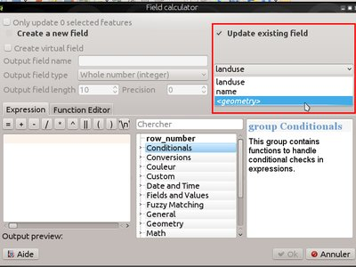
この機能は `Nyall Dawson <http://nyalldawson.net>`によって開発されました__
機能: 新しい関数の追加（v2.14）¶
バージョン2.14には多くの新しい式関数が追加されています：
- `` relate``：2つのジオメトリ間の関係のDE-9IM表現を返すか、DE-9IM関係が指定されたパターンと一致するかどうかをテストすることによって、DE-9IMジオメトリ関係を実行します。
- `` make_point``関数はオプションのzとmの値を受け付け、新しい `` make_point_m``関数がPointMの幾何学的形状の作成のために追加されました。
- 点の形状からmとzの値を取り出すための関数 「m」と 「z」
- `` make_line``と `` make_polygon``の新しい関数を使用して、一連の点から線と多角形の幾何学的図形を作成します
- `` reverse``、折り返し線を逆転させる
- 文字列をそれ自身の式であるかのように評価する `` eval``関数
- ジオメトリをx / yオフセットで変換するための `` translate``関数
- 色の引数をとり、指定された量だけより暗くまたはより明るくする `` darker``および `` lighter``関数
- `` radians``と `` degrees``：ラジアンと度の間の角度を変換するためのもの
point_on_surface：ジオメトリの表面上の点を返します。- `` exterior_ring``：ポリゴンジオメトリの外部リングを返します。
- `` is_closed``：線ストリングが閉じている場合はtrueを返します。
- 新しいジオメトリアクセッサ関数： `` geometry_n``（コレクション内から特定のジオメトリを返します）、 `` interior_ring_n``（ポリゴン内から内部リングを返します）
- `` num_geometries``：コレクション内のジオメトリの数を返します。
- `` num_rings``：ポリゴンジオメトリオブジェクトのリング数を返します。
- `` num_interior_rings``：ポリゴン内の内部リングの数を返します。
- ジオメトリ内のすべてのノードをマルチポイントジオメトリに変換するための `` nodes_to_points``
- ジオメトリ内のすべてのセグメントを複数のジオメトリに変換するための `` segments_to_lines``
closest_point：ジオメトリの最も近い点を第2のジオメトリに返しますshortest_line：2つのジオメトリを結合する最短の行を返します
`` nodes_to_points``と `` segments_to_lines``は、ジオメトリジェネレータシンボルとの使用を意図しています。例えば、データがシンボルで定義されたノード/ラインにmとzの値を使用できるようにします。
その他の改善点:
- ジオメトリおよび地物を条件付き関数で使用できるようになりました。例えば、これは `` $ geometry then else … ``や `` get_feature（…）then else … ``のような式を許します。

解析ツール¶
機能: 属性結合ツールで使える統計値の追加¶
マージ属性値または地物をマージツールのいずれかを使用する場合、結果の属性値を設定するために使用できる追加の要約統計があります。これには、Q1、Q3、四分位間の範囲、過半数および少数派の値、および固有の値の数などが含まれます。

この機能は `Nyall Dawson <http://nyalldawson.net>`によって開発されました__
機能: 地物情報ツールにて Z/M 値が表示されるように¶
識別ツールでは、識別された地物に存在するzまたはm値を表示できるようになりました。地物がラインまたはポリゴンの場合、ツールは頂点番号と識別された点に最も近い頂点のx / y / z / mを表示します。識別ツールには、コレクションの部品数と部品番号も表示されるようになりました。

この機能は `Nyall Dawson <http://nyalldawson.net>`によって開発されました__
機能: 距離と面積の単位および座標形式の操作方法の統一¶
QGIS 2.14では、距離単位、エリア単位、座標表示に関するさまざまなオプションの処理が統一され、簡素化され、プロジェクトプロパティに移動されました。この変更により、次のような多くの利点がもたらされます。
- 識別ツールの結果やステータスバーの表示など、座標がユーザーに表示されるたびに、プロジェクトプロパティで指定された座標形式が一貫して使用されます。
- プロジェクトプロパティの距離と面積単位の設定は、測定ツール、結果の識別、
$area、$lengthおよび$perimeter関数の使用を含む、すべての距離と面積の計算で尊重されます。 - 平方ヤード、エーカー、ヘクタールなどの追加の面積単位が追加されました。
- 角度測定ツールに追加の角度単位が追加されました。これには、回転、弧の分、弧の秒が含まれます。
- 投影されたCRSを使用していてもステータスバーに座標を緯度と経度で表示することができます。

この機能は、QGISが支援するバグ修正プログラムによって資金提供されました
この機能は `Nyall Dawson <http://nyalldawson.net>`によって開発されました__
ブラウザ¶
機能: ブラウザの改善¶
QGISブラウザはファイルシステムのOGC Webサービスとデータベース接続パネルで、前述のソースからマップキャンバス（またはDBマネージャウィンドウ）に任意のレイヤーを簡単にドラッグ＆ドロップできます。このリリースでは、2つの便利な新機能が追加されました。
- パスはブラウザーパネルから選択的に非表示にすることができます - これはソースリストを宣言し、関連するディレクトリーにのみ集中するのに便利です。
- ブラウザから直接プロジェクトをロードする - プロジェクト全体をQGISマップキャンバスにドラッグアンドドロップすると、ロードされます。
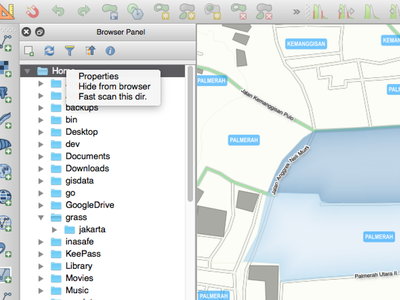
この機能はNathan Woodrowによって開発されました
データプロバイダ¶
機能: WMSケーパビリティのキャッシュ¶
QGISはWMSの `` GetCapabilities``要求をキャッシュして、そのサービスを使用する際の後続の使用応答時間が早くなるようにします。デフォルトではキャッシュ期間は24時間ですが、これはQGIS設定ダイアログの `` Network``タブで調整することができます。

この機能はJürgenFischerによって開発されました
機能: カーブしたジオメトリのサポート改善¶
区切られたテキストプロバイダは現在、カーブしたWKT文字列をサポートしており、メモリプロバイダ（「一時的なスクラッチ」レイヤなど）はカーブしたジオメトリを完全にサポートしています。さらに、QGISがGDALバージョン2.0以降を使用して構築されている場合、QGISはサポートされているファイルタイプ（GMLファイルなど）で湾曲したジオメトリを完全にサポートします。

この機能は `Nyall Dawson <http://nyalldawson.net>`によって開発されました__
機能: time と datetime フィールドの操作改善¶
QGIS 2.14では、次のような時間フィールドタイプと日時フィールドタイプの処理が改善されました。
- PostgreSQLのタイムスタンプフィールドが正しく処理される
- 数式エンジンでは、時間フィールドを完全にサポートするようになりました
- 式ビルダーに、日付、時刻、日付時刻、および間隔の計算のプレビュー計算結果が表示されるようになりました
- タイムフィールドはベクターファイルレイヤー（ファイル形式に依存）、PostgreSQL、MS SQL Server、一時的なスクラッチレイヤーによって完全にサポートされています
- レイヤーをベクターファイルに保存すると、ベクターレイヤー形式（MapInfo .tabファイルなど）でサポートされている場合は、時間フィールドが保持されます。

この機能はJürgenFischer、Nyall Dawson
機能: デリミティッドテキストプロバイダーにおける Z/M 値のサポート¶
区切られたテキストプロバイダは、ZおよびM座標を含むWKT文字列をサポートしています。例えば、zでポイントを表現し、次のような要素を測定することができます： `` POINT ZM（1 1 5 60） ``。
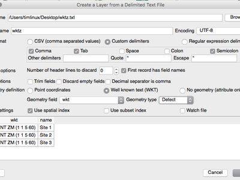
この機能は `Nyall Dawson <http://nyalldawson.net>`によって開発されました__
機能: postgres 編集におけるトランザクショングループ¶
トランザクション編集を可能にするための新しいオプションが導入されました。
このオプションを有効にすると
- 同じデータベースのすべてのレイヤーがトランザクショングループに入れられます
- グループの最初のレイヤーを編集モードにすると、他のすべてのレイヤーも自動的に編集モードに入ります
- レイヤーが編集されると、変更はすぐにデータベースに送信され、トリガーと制約がすぐに適用されます
- トランザクショングループ内の1つのレイヤがコミットされると、すべてのレイヤがコミットされます（データベーストランザクション）
- トランザクション・グループ内の1つのレイヤーがロールバックされると、すべてのレイヤーがロールバックされます（データベース・トランザクション）
この機能は現在**実験的**です。問題が見つかった場合は、報告してください<https://www.qgis.org/en/site/getinvolved/development/bugreporting.html> `__。
これは現時点でpostgresデータベースに対してのみ実装されています。

この機能は SIGE <http://www.sige.ch/> __によって資金提供されました
この機能は、Sourcepole <https://opengis.ch> __による作業に基づいて、Matthias Kuhn、OPENGIS.chによって開発されました
機能: Postgres プロバイダでのPKI認証¶
2.12で導入されたQGIS認証マネージャを使用する機能は、PostGISプロバイダに拡張されました。これにより、基本認証またはPKI認証を使用してPostgresに接続し、QGIS設定に認証情報を保存することができます。新しいPostgresプロバイダ認証は、DBマネージャでも使用できます。

この機能は Boundless Spatial <boundlessgeo.com> __によって資金提供されました
この機能はLuigi Pirelliによって開発されました
機能: 仮想レイヤ¶
レイヤーフォーマット自体にSQLクエリがサポートされていなくても、QGISがロードできるあらゆる種類のベクタレイヤで動的SQLクエリを使用できるようになりました。
そのために、新しい種類の「仮想レイヤー」と呼ばれるベクターレイヤーが利用可能になりました。これらを使用すると、プロジェクト内の他のレイヤーからのクエリ（集約と結合のサポートを含む）を定義して仮想レイヤーを作成できます。結果のレイヤーはクエリ結果のライブビューであり、ソースレイヤーへの変更は自動的かつ即座にバーチャルレイヤーに反映されます。
サポートされているSQLダイアレクトは、SQLite with Spatialite関数です。クエリーでもQGIS式関数を使用できます。クエリーでは、さまざまなデータプロバイダの複数のレイヤーを含め、あらゆる種類のベクターレイヤーにアクセスして結合することができます。
仮想レイヤーのサポートは、DBマネージャーと、新しい 『Execute SQL’ツールが利用可能な処理ツールボックスにも追加されています。

この機能は MEDDE（フランス政府持続可能な発展省）<http://www.developpement-durable.gouv.fr> __
この機能は `Hugo Mercier / Oslandia <http://oslandia.com>`によって開発されました__
GDALおよびOGRプロバイダのファイル選択で利用可能なファイル拡張子の追加¶
ベクタおよびラスタファイルの場合、QGISはGDAL / OGRライブラリに依存します。つまり、GDALまたはOGRで開くことができるほぼすべてのファイル形式をQGISで直接開くことができます。今までは、GDALまたはOGRファイルセレクタにいくつかのファイル拡張子が追加されていなかったため、ユーザーはQGISがこれらのファイル形式を開いたり、処理したりできなかったと考えていました。この問題を最小限に抑えるために、GDALおよびOGRファイルセレクタフィルタにいくつかの新しい拡張機能が追加されました。
ベクタファイル:
- .thf EDIGEO French cadastre 形式
- .ods OpenDocument Spreadsheet LibreOffice 形式
- .xls Microsoft Excel 形式
- Microsoft Excel OpenXML形式の.xlsx
- .xml for NAS - ALKIS形式
- WAsP形式の.map
- PCIDSK形式の.pix
- GPSTrackMaker形式の.gtmと.zip
- VFK形式の.vfk
- OpenStreetMap形式の.osmおよび.pbf
- SUA形式の.sua
- OpenAir形式の.txt
- .xml for Planetary Data Systems TABLE format
- .htf for Hydrographic Transfer Format
- .svg for SVG format
- ARCGENのための.ge
- .sxf for Storage and eXchange Format
- 地理空間PDFベクトル形式の.pdf
- .sgy and .segy for SEG-Y format
- SEGUKOOA形式の.seg、.seg1、.sp1、.uko、.ukooa
- .ovf VRTベクトルファイル形式
- .kmz for compressed KML (KMZ) format
- .db3, .s3db, .sqlite3, .db3, .s3db, .sqlite3 for SQLite/Spatialite format
- .sl3 for SQLite Spatial (FDO) format
- CouchDB Spatial (via URL)
ラスタファイル:
- vrtラスタファイル形式の場合は.ovr
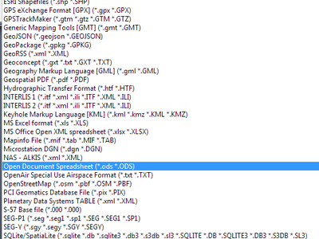
この機能は MédéricRibreux <https://medspx.fr> __によって開発されました
機能: PostGIS 2.2 (またはそれ以降) のレイヤにおけるサーバー側での単純化のために ST_RemoveRepeatedPoints が利用可能に¶
PostGIS 2.2インスタンスを使用する場合、QGISはST _SnapToGrid関数の代わりにST _RemoveRepeatedPoints関数を使用して、 `Paul Ramsey <http://blog.cartodb.com/smaller-faster/で説明されているように、サーバー側の簡略化を処理します> `__。
この方法は、QGISがサーバからダウンロードする必要があるジオメトリの頂点の数を減らし、QGISとPostgreSQLサーバの間でレンダリング速度を向上させ、帯域を節約します。
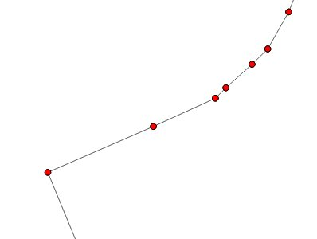
この機能は、MichaëlDouchin @kimaidou <http://3liz.com> `__によって開発されました
データマネジメント¶
機能: SPIT プラグインの削除¶
プラグインが維持されず、DBマネージャと処理データベースのインポートアルゴリズムを超えているため、「SPIT」プラグインはQGISにバンドルされなくなりました。
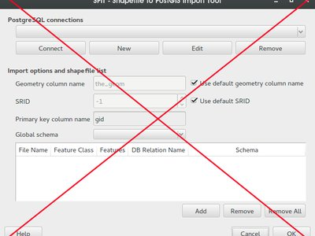
この機能はNathan Woodrowによって開発されました
機能: DXFエクスポート: アプリケーションやサーバでのDXFレイヤ名の代わりにタイトルが使用可能に¶
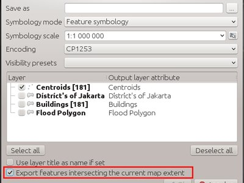
この機能の資金は City of Uster <http://gis.uster.ch/> __
この機能はJürgenFischerによって開発されました
機能: ベクタの保存ダイアログにてジオメトリタイプの上書きが可能に¶
これにより、ジオメトリ・タイプの表をジオメトリ・タイプで保存するなどの作業を実行できるため、ジオメトリを手動で行に追加できます。これまでは、ダミー結合やその他の回避策を使用してQGISでしか実行できませんでした。
さらに、出力ファイルを強制的にマルチタイプにするオプションや、zディメンションを含むオプションも追加されています。

この機能は `Nyall Dawson <http://nyalldawson.net>`によって開発されました__
機能: 外部リソースウィジェット¶
新しいフォームウィジェットが利用可能になりました。これは 「外部リソース」と呼ばれ、格納されているファイルパスに割り当てられた属性のより完全な処理を可能にします。ウィジェットの機能の完全な概要を以下に示します。
- **拡張フィルタ**を設定して、固定ファイル形式を強制的に保存することができます。フィルタが設定されている場合、ファイルセレクタはフィルタに関連するファイル名のみを表示します（検索フィールドで 『*』文字を使用してファイルを選択することは可能です）。フィルタ構文は QtウィジェットQFileDialog :: getOpenFileName <https://doc.qt.io/qt-4.8/qfiledialog.html#getOpenFileName> __と同じです。
- **デフォルトパス**を設定することができます。ユーザーがウィジェットをトリガーするたびに、ファイルセレクターがデフォルトパス（設定されている場合）で開きます。デフォルトパスが設定されていない場合、ファイルセレクタは「外部リソース」ウィジェットから選択された最後のパスを使用します。ウィジェットが一度も使用されていない場合、ファイルセレクタはデフォルトでプロジェクトパス上で開きます。
- **相対パス保存**を定義して設定することができます。相対パスの保存は、デフォルトパスの後（デフォルトパスが設定されている場合）または現在のプロジェクトパスの後にあるパスの一部だけを保存することを可能にします。これは、長いパスを限られたサイズの属性（254文字に制限されているシェイプファイルのテキスト属性など）に保存する場合や、配布用に独立したプロジェクトおよびデータファイルアーカイブを作成する場合に特に便利です。
- ウィジェットを使いやすくするもう1つの新機能は、**ファイルパスをハイパーリンク**として表示できるようにすることです。ハイパーリンクをクリックすると、QGISからリンクされたファイルが直接開きます。このオプションを設定すると、ファイルの絶対パスまたはファイル名のみを表示できます。ファイルは、オペレーティングシステムのファイル形式のデフォルトのハンドラを使用して開きます。
- **ファイルパス**の代わりにURLを使用することもできます。ウィジェットはそれをURLとして解釈し、デフォルトのWebブラウザで直接リンクされたWebページを開くことができます。
- **ファイルパス**の代わりにディレクトリパスを保存することができます。
- このウィジェットには、**統合ドキュメントビューア**があります。QGISに直接写真やWebページを表示することができます。統合されたビューアのファイル・チューザーは上記のすべてのオプションの恩恵を受けるでしょう。
設定オプションの詳細については、設定ダイアログボックスのツールヒントを使用してください。
この新しいウィジェットの主な目的は、既存の2つの「ファイル名」と「写真」ウィジェットを修正して改良し、それらを単一の統一ウィジェットに置き換えることです。現時点では古いウィジェットを使用することはできますが、QGIS 3.0では廃止予定です。新しい 『外部リソース’ウィジェットを使用するようにプロジェクトを切り替えることをおすすめします。
**この機能は**によって開発されました：
- Denis Rouzaud
- Matthias Kuhn at OPENGIS.ch
- Médéric Ribreux

機能: N:M リレーションの編集¶
これにより、N：M（多対多）関係で正規化されたリレーショナルデータベース上のデータを管理する可能性が追加されます。リレーションエディタのフォームでは、リレーションがN：Mリレーションとして視覚化されている場合、追加、削除、リンク、およびリンク解除のツールもリンクテーブルで機能します。
設定はフィールドタブで行います。ここでは、関係の2番目の関係を選択できます（リンクテーブルの2番目の関係で適切な関係がある場合）。
制限:
QGISはデータベース管理システムではありません。
基礎となるデータベースシステムに関する前提に基づいています。特に：
- 第2の関係について「ON DELETE CASCADE」または同様の尺度が期待される
- 地物を追加するときに主キーの設定を考慮しません。ユーザーは手動で設定する必要があります。または、データベースから導出された値の場合は、レイヤーをトランザクションモードにする必要があります

この機能は、ヴヴェイ市のパリー市、ヌーシャテルの共和国と広州によって資金提供されました
この機能は `Matthias Kuhn <http://opengis.ch>`によって開発されました__
デジタイジング¶
機能: トレースデジタイジングツール¶
新しいトレースデジタイジングツールは、高度なデジタイジングツールです。このツールを使用すると、別のレイヤーの地物をトレースして、あるレイヤーの地物をデジタイズすることができます。
トレースツール：
- Dijkstraの最短経路アルゴリズムを使用して追跡可能な経路を見つける
- 複数の異なる機能にわたってルートをトレースできます
- 高度なデジタイザツール（例えば、再構成）で使用できます。
- キーボードの** T **を押してデジタル化している間に有効または無効にすることができます
- 高速で使いやすい
この機能の詳細は here <http://www.lutraconsulting.co.uk/blog/2016/02/16/qgis-trace-digitising/> __と `このチュートリアル<http：// www .lutraconsulting.co.uk / products / autotrace / TraceDigitising> `__。
この機能の資金は、ウィンザーとメイデンヘッドのロイヤル・ボロー、ニース・ポート・タルボット・カウンティ・ボロー・カウンシル、ウジャヴァル・ガンディー、サリー・ヒース・ボロー・カウンシル、マティアス・アーノルド、ノーサンバーランド国立公園局、ブリューリュー・エステイツ・リミテッド、カントリースケープ

この機能は `Lutra Consulting <http://www.lutraconsulting.co.uk>`によって開発されました__
ラベリング¶
機能: ポイントラベルの配置オプションに 「Cartographic」 モードの追加¶
この配置モードでは、理想的な地図配置ルールに従ってポイントラベル候補が生成されます。たとえば、ラベル配置は次の順序で優先順位付けされます。
- 右上
- 左上
- 右下
- 左下
- 中央右
- 中央左
- やや右上
- やや左下
（Krygier and Wood（2011）および他の作図マスター作品のガイドラインを尊重する）
優先順位付けされたポジションのデータ定義リストを使用して、個々の地物に配置優先度を設定することもできます。これにより、特定のプレースメントだけを使用することもできます。たとえば、沿岸の地物の場合、土地の上にラベルが配置されないようにすることができます。

この機能はAndreas Neumannによって資金提供されました
この機能は `Nyall Dawson <http://nyalldawson.net>`によって開発されました__
機能: シンボル境界からのラベルまでの距離の使用¶
この設定が有効な場合、ラベルの距離は、ポイント自体ではなくポイントのレンダリングされたシンボルの境界から適用されます。これは、シンボルサイズが固定されていない場合、たとえばデータ定義サイズで設定されている場合や、分類されたレンダラで異なるシンボルを使用している場合に特に便利です。
この設定は、新しい地図点ラベルの配置モードでのみ使用できます。

この機能はAndreas Neumannによって資金提供されました
この機能は `Nyall Dawson <http://nyalldawson.net>`によって開発されました__
機能: ラベル描画順序の制御¶
ラベルの 「z-index」を設定するための新しいコントロールが、ラベリングプロパティダイアログに追加されました。このコントロール（個々の地物のデータ定義の上書きも受け入れます）は、ラベルのレンダリング順序を決定します。zインデックスが高いラベルレイヤーは、zインデックスが小さいレイヤーのラベルの上に表示されます。
さらに、2つのラベルに一致するz-インデックスがある場合、ロジックは調整されています。
- 同じレイヤーからのものであれば、小さいラベルは常に大きいラベルの上に描画されます
- それらが異なるレイヤーからのものである場合、レイヤー自体と同じ順序でラベルが描画されます（つまり、凡例に設定された順序に従います）
ダイアグラムでは、ラベルや図の順序を制御できるように、Zインデックスを設定することもできます（データは定義しません）。
これは、他のレイヤーの地物の下にラベルを描くことを許可していません。地図上でラベルが描かれる順序を制御するだけです。

この機能は `Nyall Dawson <http://nyalldawson.net>`によって開発されました__
機能：描画されたシンボルを地物ラベルにて認識が可能に¶
以前は、ポイント地物自体がラベル候補の障害として扱われていました。ポイントに大きなシンボルまたはオフセットシンボルが使用された場合、障害物コストを発生させることなくラベルにこのシンボルが重なることが許可されました。
今、ラベルがポイント地物と衝突するかどうかを検出するときに、レンダリングされたシンボルの実際のサイズとオフセットが考慮されます。その結果、QGISはより多くの状況でポイントシンボル上にラベルを描画することを回避するようになりました。

この機能は、Uster City
この機能は `Nyall Dawson <http://nyalldawson.net>`によって開発されました__
レイヤ凡例¶
機能: 複数の選択レイヤやレイヤグループへのスタイル貼り付けが可能に¶
この機能により、1つのレイヤーのスタイルをレイヤーグループまたは選択したレイヤーに貼り付けることができます。

この機能はSalvatore Larosaによって開発されました
機能: 条件式による凡例フィルタ¶
凡例の要素を式でフィルタリングすることが可能になりました。ルールベースまたは分類されたシンボルのフィルタリングを念頭に置いて設計されています。
凡例フィルタリングは、メインアプリケーションの凡例とQGISコンポーザの凡例コンポーネントで使用できます。

この機能は、「Agence de l’Eau Adour-Garonne（Adour-Garonne Water Agency）<http://www.eau-adour-garonne.fr> `__
この機能は `Hugo Mercier / Oslandia <http://oslandia.com>`によって開発されました__
マップコンポーザ¶
機能: 凡例項目の新しいフィルタリングオプション¶
これにより、凡例要素をフィルタする2つの新しいオプションが導入されます。
最初の式でフィルタリングすると、ユーザーは凡例に表示される地物をフィルタリングするための式を設定できます。凡例には、一致する地物を持つシンボルのみが表示されます。
第2のフィルタオプションは、現在のアトラスポリゴンに含まれるアイテムのみを含むように、作曲者の凡例をフィルタリングすることを可能にする。

この機能は、 Hugo Mercier（Oslandia）<http://oslandia.com/> __によって開発されました。
機能: コンポーザテンプレートへのパスの追加¶
QGISがコンポーザーテンプレートを見つけるために使用するカスタムパスを定義できるようになりました。つまり、ネットワーク共有に多数のテンプレートを入れ、自分のシステムに存在するローカルフォルダに加えてそのフォルダにアクセスできるようにすることができます。コンポーザーテンプレートの検索パスを管理するには、 `` Settings - > Options - > Composer``を見てください。
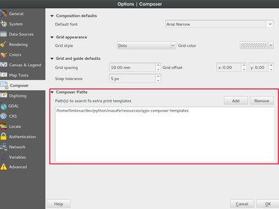
この機能はNathan Woodrowによって開発されました
機能: コンポーザ管理での複数選択¶
Composer Managerは、複数の曲を同時に管理するためのサポートを得ています。Ctrlキーを押しながらリストから複数のコンポジションを選択することで、一度に複数のコンポジションを開いたり、削除したりすることができます。

この機能は MédéricRibreux <https://medspx.fr> __によって開発されました
プラグイン¶
機能: プラグインマネージャーでの認証システムのサポート¶
新しい認証システムのサポートがプラグインマネージャーに追加されました。これにより、ユーザーはプラグインリポジトリへの接続に認証設定を適用し、システム管理者はプラグインリポジトリおよび/またはプラグインのダウンロードパッケージへの認証アクセスを作成できます。

この機能は Boundless Spatial によって資金提供されました
この機能はLarry Shafferによって開発されました
プロセッシング¶
機能: 新しいアルゴリズムの追加（v2.14）¶
QGISジオアルゴリズム:¶
- Smooth：線やポリゴンのレイヤーを平滑化します。
- 行方向を逆転させる。
GDAL/OGR ジオアルゴリズム¶
- gdal2tiles：TMSタイル、KML、シンプルなWebビューアでディレクトリを構築します。
- gdal _retile：一連のタイルを再編成し、および/またはタイル型ピラミッドレベルを構築します。
機能: ユニットテスト Q/A¶
処理モジュールの長期安定性を保証するために、新しいテストフレームワークが導入されました。
ジオアルゴリズムの処理は、QGISソースコードに当たるすべての変更の後に実行され、その結果は正しい動作を保証するために制御データセットと比較されます。これは、可能性のある回帰についての即時のフィードバックを与える。
より多くのテストが追加されることが可能であり、また望まれます。参加方法<www.opengis.ch/2016/02/04/increasing-the-stability-of-processing-algorithms/> `__を読むことができます。

この機能は The QGIS Project <https://www.qgis.org> __
この機能は `Matthias Kuhn、OPENGIS.ch <https://opengis.ch>`によって開発されました__
機能: ツールボックスの改善¶
簡素化されたインターフェイスが削除され、新しい使いやすい管理システムのシステムが追加されました。アルゴリズム検索機能は、現在アクティブではないプロバイダを検索し、アクティブにすることを提案します。

この機能は Boundless Spatial <http://boundlessgeo.com/> __によって資金提供されました
この機能はVíctorOlayaによって開発されました

機能: わかりやすいアルゴリズムダイアログの追加¶
アルゴリズムのパラメータとともに短い説明が表示され、アルゴリズムの目的を理解しやすくなりました。
また、「バッチプロセスとして実行…」ボタンを使用して、アルゴリズムダイアログからバッチプロセスを開始することもできます

機能: GRASS7 v.net モジュール¶
QGIS 2.14処理にv.net GRASSモジュールが組み込まれました（GRASS7のみ）。これらのモジュールは、グラフ線ベクターレイヤー（ネットワーク）上で実行するアルゴリズムのセットです。 グラフ は、一連の辺（または円弧または線）でリンクされた頂点（またはノードまたは点）の集合です。辺のセットは、しばしばネットワークと呼ばれます。
v.netモジュールのおかげで、ネットワーク上のノード間の最短経路を簡単に計算することができます。また、 isochrone map <https://en.wikipedia.org/wiki/Isochrone_map> __を計算することもできます中心点。ネットワークと一連のトラベルノードから複雑なトラベルセールスマン問題<https://en.wikipedia.org/wiki/Travelling_salesman_problem> `__を簡単に解決することもできます。
v.netのアルゴリズムでは、（ネットワーク用の）線ベクターレイヤーと、計算に使用するノードを表すポイントレイヤーを使用することがよくあります。問題を避けるために、ネットワークレイヤーに真のグラフ線ベクターレイヤーを使用してください（辺間の交差なしに頂点に接続する必要があります）。コスト計算に任意のネットワークレイヤー属性を使用することもできます（属性の内容は、辺の移動コストを計算するために使用されます）。
処理に含まれているさまざまなアルゴリズムの概要を以下に示します。
- v.net.alloc：最も近いセンターからサブネットを割り当てます。
- v.net.allpairs：ネットワーク内のすべてのノードペア間の最短経路を計算します。
- v.net.arcs：点のファイルから円弧を作成します。
- v.net.articulation：ネットワーク内のアーティキュレーションポイント <https://en.wikipedia.org/wiki/Biconnected_component> `__ を計算します。
- v.net.bridge: Computes bridges of the network.
- v.net.centrality：ネットワークの各ノードの度合い、中心性、中間度、近さおよび固有ベクターの中心性を計算します。
- v.net.components：ネットワーク内の強く弱く接続されたコンポーネントを計算します。
- v.net.connect：ポイント（ノード）をネットワークの最も近いアークに接続します（必要に応じてエッジを追加します）。
- v.net.connectivity：ネットワーク内の2つのノードセット間の頂点接続を計算します。
- v.net.distance：2組のノード間のネットワークを経由する最短経路を計算します。
- v.net.flow：ネットワーク内の2つのノードセット間の最大フローを計算します。
- v.net.iso：一連のノードからネットワークの等時性マップを計算します。
- v.net.nodes：ネットワーク/グラフレイヤーのノードを抽出します。
- v.net.nreports：ノードに関する情報を報告します。
- v.net.path：2つのノード間のネットワーク上の最短パスを検索します。
- v.net.report：ネットワークのエッジに関する情報を報告します。
- v.net.salesmanは： 巡回セールスマンのパスを計算します。<https://en.wikipedia.org/wiki/Travelling_salesman_problem> __ネットワーク上のノードのセットから。
- v.net.spanningtree：ネットワークのスパニングツリー<https://en.wikipedia.org/wiki/Spanning_tree> `__を計算します。
- v.net.steiner：ネットワークと与えられたノードの Steiner tree <https://en.wikipedia.org/wiki/Steiner_tree_problem> __を作成します。
- v.net.visibility：可視性グラフの作成を実行します。
詳細については、直接、 `__`公式GRASS7のドキュメント<https://grass.osgeo.org/grass70/manuals/topic_network.html>を読み取るためにv.net処理アルゴリズムのそれぞれに「ヘルプ」タブを使用します。

この機能は MédéricRibreux <https://medspx.fr> __によって開発されました
プログラマビリティ¶
機能: 関数エディタの再設計¶
自動保存するように
機能: python init コードをプロジェクト内に保存¶
オプションとコードエディタを追加してPythonフォームのinitコードをプロジェクトに保存します（そして、スタイルセクションにあるのでDBにします）

機能: QgsFeatureRequest でのフィルタ・ソートオプションの追加¶
QgsFeatureRequestは、返される地物の数の上限を設定できるようになりました。多くの場合、この制限はプロバイダーに渡され、設定された数の地物だけが必要な場合には大幅なパフォーマンスの向上をもたらします。
さらに、QgsFeatureRequestは返された地物の設定順序をサポートするようになりました。ここでも、多くの場合、この順序付けはプロバイダーに委任され、最適なパフォーマンスを得るために「サーバー側」で実行されます。
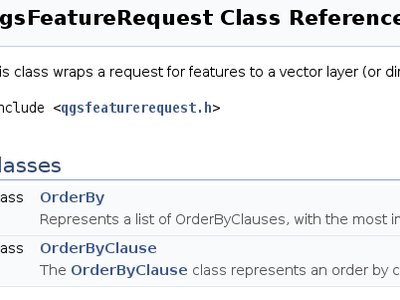
機能: Pythonコードオプションでの地物フォームのカスタマイズ¶
この機能により、Pythonコードのカスタム機能フォームにさらに多くのオプションが追加されます。
- load from file (with file picker widget)
- 環境からのロード（つまり、プラグインやPythonのinit関数）
- 入力ウィジェットにコードを直接入力する（新しいオプション）
ダイアログに入力されたカスタムPythonコードを含む設定オプションは、プロジェクトおよびスタイルQML設定に保存され、DBからエクスポート/復元できます。

この機能は ARPA Piemonte <http://www.arpa.piemonte.gov.it/> __によって資金提供されました
この機能は、 Alessandro Pasotti（ItOpen）<http://www.itopen.it> __
新しいコアクラス¶
- QgsAttributeEditorElement - abstract base class for any elements of a drag and drop form
- QgsAttributeEditorContainer - container for attribute editors, used to group them visually in an attribute form
- QgsAttributeEditorField - element for loading a field’s widget onto a form
- QgsAttributeEditorRelation - element for loading a relation editor widget onto a form
- QgsEditFormConfig - stores and sets configuration parameters for attribute editor forms
- QgsFeatureFilterProvider - provides an interface for modifying a QgsFeatureRequest in place to apply additional filters to the request
- QgsTracer - provides graph creation and shortest path search for vector layers
- QgsTransactionGroup - interface for grouping layers into single edit transactions
- QgsUnitTypes - helper functions for various unit types and conversions between units (eg distance and area units)
- QgsVirtualLayerDefinition - class for manipulating the definitions of virtual layers
- QgsVirtualLayerDefinitionUtils - helper utilities for working with QgsVirtualLayerDefinition objects
- Qgs25DRenderer - 2.5D symbol renderer
- QgsGeometryGeneratorSymbolLayerV2 - geometry generator symbol layer
- QgsFeatureRequest.OrderByClause - class for specifying a field sort order for feature requests
- QgsFeatureRequest.OrderBy - a prioritized list of order by clauses for sorting
新しいGUIクラス¶
再利用可能なウィジェット:¶
- QgsExternalResourceWidget - widget for displaying a file path with a push button for an 「open file」 dialog, and optional display of pictures or HTML files
- QgsFileWidget - widget for selecting a file or a folder
- QgsLegendFilterButton - tool button widget that allows enabling or disabling legend filter by contents of the map
- QgsMapCanvasTracer - an extension of QgsTracer that provides extra functionality for interacting with map canvases
- Qgs25DRendererWidget - widget for setting properties for a 2.5D renderer
- QgsColorWidgetAction - widget action for embedding a color picker inside a menu
再利用可能なダイアログ:¶
- QgsStyleV2GroupSelectionDialog - dialog for grouping selections in a style
- QgsGroupWMSDataDialog - dialog for setting properties for a WMS group
- QgsOrderByDialog - dialog for specifying sort ordering of fields
QGISサーバ¶
機能: WFS GetFeature リクエストの STARTINDEX 変数¶
`` STARTINDEX``はWFS 2.0の標準ですが、QGIS Serverに実装されたWFS 1.0の拡張版です。
STARTINDEX は、結果セット内のいくつかの地物をスキップするために使用することができ、 MAXFEATURES と組み合わせると、WFS GetFeatureを使用して結果をページスルーする機能が提供されます。 STARTINDEX = 0 は、最初の地物で始まり、スキップしないことを意味することに注意してください。
この機能は 3Liz によって開発されました
Feature: GetLegendGraphic の showFeatureCount¶
凡例に地物数を追加するには、非標準パラメータ showFeatureCount を追加します。これを有効にするには、showFeatureCount を TRUE または 1 に設定します。
この機能には偽のXサーバが必要です。

この機能は 3Liz によって開発されました

機能: プロジェクトプロパティでの設定チェッカー¶
QGISサーバー用のプロジェクトの設定を支援するために、プロジェクトプロパティに新しい設定チェッカーが追加されました。
チェッカーは次のようなエラーをテストします。
- OWS名として使用される名前または短い名前を複製する
- 不正な OWS 名
- 欠落したベクトルレイヤのエンコーディング

この機能は Ifremer <http://wwz.ifremer.fr/institut_eng/> __によって資金提供されました
この機能は 3Liz によって開発されました
機能: WMS INSPIRE ケーパビリティ¶
プロジェクトのプロパティでは、以下のことが可能です。
- INSPIRE機能を有効にする
- 24のEU公式言語+ 5つの地域言語からサービスの言語を選択する
- サービスメタデータのシナリオを選択し、そのパラメータを指定します
WMS 1.3.0の機能は、INSPIRE構成を反映しています。

この機能は 3Liz によって開発されました
機能: レイヤ、グループ、プロジェクトへの略称の追加¶
多くの要素に** Name と Title **の両方があります。Nameは、マシンツーマシン通信に使用されるテキスト文字列であり、Titleは人間の利益のためのものです。たとえば、データセットにTitle * Maximum Atmospheric Temperature という記述があり、省略名 ATMAX *を使用して要求することができます。
ユーザーはすでにレイヤーとプロジェクトのタイトルを設定できます。OpenGeospatial Web Services、OWS（WMS、WFS、WCS）の名前は、レイヤーツリーで使用される名前に基づいています。この名前は、機械対機械通信の名前よりも人間のためのラベルです。
ユーザーがMachine-to-Machine通信のテキスト文字列としてNameを定義する機能を追加するには、次の機能を追加します。
- 短い名前の行でレイヤのプロパティを編集する
- レイヤーツリーグループへのWMSデータダイアログ（短い名前、タイトル、要約）
- プロジェクトのプロパティへの短い名前行の編集
- 静的メソッドを使ってアクセス可能な短い名前の行編集に正規表現バリデータ 「^ [A-Za-z] [A-Za-z0-9。_-] *」を追加する
- fullProjectSettingsにTreeName要素を追加する
レイヤー、グループ、およびプロジェクトに短い名前が設定されている場合は、レイヤー名としてQGISサーバーで使用されます。

この機能は 3Liz によって開発されました
シンボロジー¶

機能: SVGカラー設定での透過のサポート¶
バンドルされていないSVGには、
fill-opacity="param(fill-opacity)"
そして
stroke-opacity="param(outline-opacity)"
透明性のサポートを可能にする。
この機能は `Nyall Dawson <http://nyalldawson.net>`によって開発されました__
機能: シンボルレイヤのコピーの簡略化¶
シンボルのプロパティダイアログに新しい「複製」ボタンが追加され、シンボルレイヤを簡単に複製することができます。
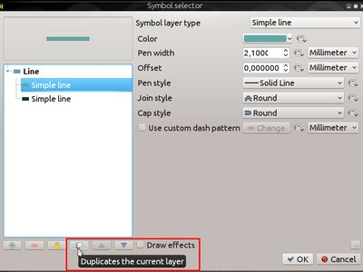
この機能は `Nyall Dawson <http://nyalldawson.net>`によって開発されました__
機能: 2.5D 表示¶
これにより、2.5Dの効果を得るために必要なすべての要素をまとめやすくするための構成インターフェースとレンダラーが追加されます。
それはスタイリングのいくつかを構成することを可能にし、使いやすいセットアップを作成するためのものです。
システムのすべての部分はQGISの内部レンダリングとシンボルエンジンの周りに構築されているので、細かい調整が必要です。すべての可能性を得るには、作成時にレンダラーを段階的、分類済み、または単一のシンボルレンダラーに変更するだけで、必要に応じてスタイルを改善するための完全なアクセス権が得られます。
**この機能は**によって開発されました：
- Matthias Kuhn at OPENGIS.ch
**この機能は**によって資金提供されました：
- ピカルディ地域評議会
- 調節します
- Ville de Nyon
- Wetu GIT cc

機能: 地物の描画順序が定義可能に¶
地物を特定の順序でレンダリングする必要がある場合、これは任意の式を使用して指定できます。
これはレイヤのシンボル設定ダイアログで設定することができ、単純なフィールドまたは複雑な式にすることができます。
昇順または降順の制御、NULLが最初か最後かを制御します。
可能であれば、要求はデータベースに送信されます（これは式の複雑さとレイヤーのプロバイダーによって異なります）。要求をデータベースに送信できない場合、注文はローカル・マシン上で実行されます。
これは、2.5Dレンダラが「カメラ」からの距離に基づいて地物をレンダリングするために使用されます。
これはプラグインでも利用できます：
layer.getFeatures( QgsFeatureRequest().setOrderBy( 'name' ) ) -- alphabetical by name
この機能は、：Matthias KuhnによってOPENGIS.ch <https://opengis.ch>で開発されました**この機能は、**：ピュアディー地域評議会、ADUGA、Ville de Nyon、Wetu GIT cc

この機能は `Matthias Kuhn、OPENGIS.ch <https://opengis.ch>`によって開発されました__
機能: ジオメトリジェネレータシンボル¶
ジオメトリジェネレータシンボルを使用すると、式エンジンを使用してレンダリングする前にジオメトリを変更したり、地物属性に基づいてレンダリングしながら新しいジオメトリを作成することさ
これは、ソース内のデータを実際に変更することなく、レンダリングの属性のみに基づくパラメータを持つbuffer、translate、intersect、またはextrudeなどのあらゆる種類の空間演算子を使用できます。
例¶
ポリゴンの枠線の塗りつぶしスタイル¶
これにより、元のポリゴンの輪郭を表すポリゴンが生成されます（サンプル画像）
difference( buffer( $geometry , 250 ), buffer( $geometry, -250 ) )
シンボルレイヤーごとに異なるジオメトリジェネレータを含めることができます。これにより、ジオメトリの異なるバージョンを同時に表示することができます。例として、2.5Dレンダラーがあります。

この機能は、ピカルディ地域評議会、ADUGA、Ville de Nyon、Wetu GIT cc
この機能は `Matthias Kuhn、OPENGIS.ch <https://opengis.ch>`によって開発されました__
ユーザーインターフェース¶
機能: 凡例のコンテクストメニューから直接表示やシンボルカラーが設定可能に¶
メニューにカラーホイールウィジェットを表示するので、1つのダイアログを開く必要なしに、シンボルの色をインタラクティブに編集することができます。

この機能は `Nyall Dawson <http://nyalldawson.net>`によって開発されました__
機能: レイヤツリーから直接凡例シンボルの編集が可能に¶
これにより、右クリックメニューにレンダラーの子凡例項目（カテゴリ別レンダラーのカテゴリなど）の新しい「編集記号」項目が追加されます。それを選択すると、クラスのシンボルを直接編集できるシンボルエディタダイアログが開きます。レイヤプロパティを開いてスタイルタブを開くよりもはるかに高速です。子アイテムをダブルクリックしてシンボルエディタをすぐに開くこともできます。

この機能は `Nyall Dawson <http://nyalldawson.net>`によって開発されました__
機能：コンテキストメニューからすべての凡例を表示/非表示¶
項目の右クリックメニューから分類/卒業/ルールベースのレイヤーのすべてのシンボルアイテムのオン/オフを切り替えることができます。以前は、各アイテムを手動で1つずつ切り替える必要がありました。

この機能は `Nyall Dawson <http://nyalldawson.net>`によって開発されました__